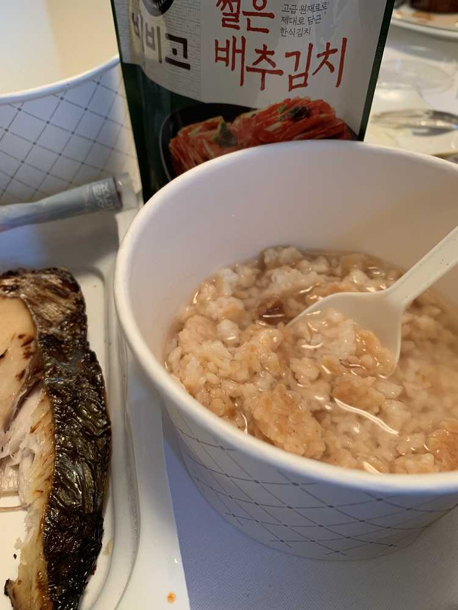

한국에서 시리얼이랑
누룽지, 김치, 요거트, 한약, 물, 감식초 까지
야무지게 싸가가지구
맛있게 먹구 있습니다!!

예전에는 다른 나라의 음식들이 처음이라 너무 신기해서
다 먹어보고 조절을 못했는데
이제는 뭔가 요령이 생긴 것 같아요!
맛있는 음식이 뭔 지도 파악한 것 같구 ㅋㅋㅋㅋㅋㅋ
어제도 사실
저 정식으로 먹었다는ㅎㅎ
어젠 저의 룸메이트와 같이
먹었는데 누룽지가 조각이 너무 커서
잘 안 퍼지더라구요ㅠㅠ그래서 과자 먹다싶이 먹었지만ㅠ
배추김치가 아닌 볶음김치로 누룽지와 함께 했답니다ㅋㅋ
그리구 편의점에서 하루종일 고른 거 같아요..
누룽지와 어울리는 반찬이 뭐가 있을까 ..
하고 생각했는데 ...
부모님께서 예전에
누룽지랑 김치랑 조기!!! 구워주셨던 기억이 있는 거예요!
사실 ... 그 뭐지
계란말이? 랑 비엔나 소시지? 있을까 하고 찾고 있었거든요
비엔나 소시지는 별로 안 좋아하지만...
편의점의 한계가 있기 때문에
찾았지만
웬걸
생선이 있었네요 ㅋㅋㅋㅋㅋㅋㅋ
종류도 다양했지만
짠 걸 또 싫어하는 저는
소금만 살짝 쳐진 생선을 선택했구...
따뜻한 걸 너무 좋아하는 저는
15초 돌려야할 걸 25초 돌렸어요ㅋㅋㅋㅋㅋㅋ
(猫舌じゃないです。😂)
지금 옴뇸뇸뇸 잘 먹고 있답니다!!
💕☀️🌙여기서 미션!!💕☀️🌙
저의 룸메이트는 누구일까요!!!????????